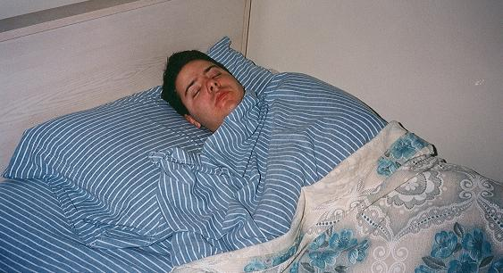

Chaotic Neutral Dinner
Home

DESCRIPTION
Sometimes if I *really* don't want to do the dishes, I go to sleep for dinner :p
INGREDIENTS
- Usually a bed but sometimes the floor is lowkey comfortable
- Pillows
- Blanket
- Fan, for background noise
- Sleep frequency video https://youtu.be/xsfyb1pStdw?si=or8QQeeNsgNqnr5p
- Tell everyone you're going to sleep for dinner so please shush!
- Get the fan started
- Put your frequency video of choice on, this one is a favorite of mine
- Get comfy in bed
- Close your eyes and try to ignore the hunger pangs that easily could've been avoided if you would've just cooked dinner like a normal person